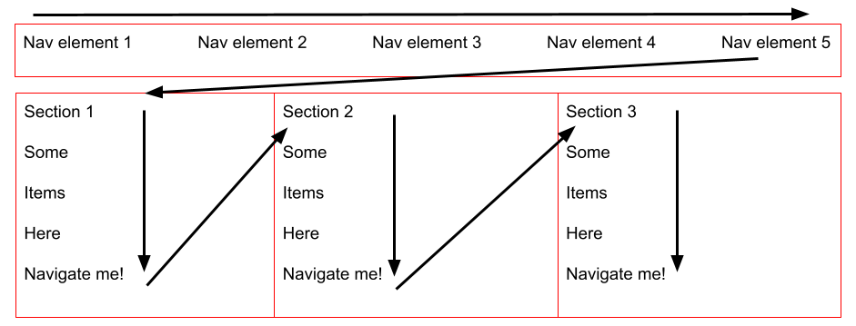

Criteria Examples
Warning: This page has smooth scrolling enabled. Readers with vestibular motion disorders may wish to enable the reduced motion feature on their device to stop the smooth scroll. Other elements also contain animation effects, but they are automatically turned off and can be stopped once they are started. How to reduce motion in various operating systems. This warning is talked about in Rapidly flashing or changing content can be paused or stopped.
This page contains examples of what certain criteria should look like. There are some accessibility issues with some of the examples. Most of the issues should have notes in the criteria describing them. That being said, it's most likely that not every issue with the page has been found so do not take the examples on this page as 100% correct. You should use your best judgment, our training videos, and the WCAG guidelines to help you decide if anything is an issue. This page follows the in-depth criteria in the Accessibility Audit Template.
For Software Team Leads: If you ever want to change anything on this page, the github login is in the Software Team Leads folder. There is also a copy of the code in the same folder if for some reason you can't access the github account (Last updated 6/27/2024.)
Table of Contents
- Keyboard Navigation
- A "skip link" is provided for all repeating elements on the page
- All active/onscreen elements are accessible and function properly w/ keyboard
- All inactive/offscreen elements are ignored by keyboard
- Focus indicator is easily visible and consistent throughout page
- Navigation order is logical follows the flow of the page
- Menus are easy to navigate, logical, and intuitive
- Forms are easy to navigate, logical, and intuitive
- Multiple ways are available to the user to find other webpages on the site
- Interacting with elements on the page doesn't cause any unexpected, dramatic changes that may confuse the user
- Automatically updating content can be paused, stopped, hidden or allow user to modify the timing of content
- Keys used in navigation are consistent and logical throughout webpage / website
- Key commands built into site can be turned off or are only active on certain elements of the page
- The user has a way to close content that is dynamically added to the webpage without deleting other content
- Focusing prevents additional content from disappearing
- Additional content is visible for as long as the user needs it, or until the information is no longer valid or relevant
- No keyboard traps exist on the page
- Screen Reader Navigation
- A "skip link" is provided for all repeating elements on the page
- All active/onscreen elements are accessible and function properly w/ screen reader
- All inactive/offscreen elements are ignored by screen reader
- Menus are easy to navigate logical, and intuitive
- Forms are easy to navigate, logical, and intuitive
- Multiple ways are available to find other webpages on the site
- Interacting with the page doesn't cause any changes that may confuse the user
- Automatically updating content can be paused, stopped, have timing modified
- Keys used in navigation are consistent and logical throughout page
- Keyboard traps are non-existent on the page
- Key commands built into site can be turned off or are only active on certain elements
- Key commands do not override screen reader key commands or cause unexpected results
- Dynamically added content can be closed without deleting other content
- Keyboard focus prevents additional content from disappearing
- Valid and relevant content can be seen for as long as needed
- Alerts are read aloud by screen reader every time they are added
- Websites use appropriate language attribute
- Titles and Headings
- Web pages have titles that describe topic and purpose
- Headings are in a logical order and don’t skip levels
- Headings/labels clearly describe the topic/purpose including interactive components
- Text that serves the same functionality as a header/label is properly assigned as one
- Similar elements throughout the website are consistent in formatting and styling
- Tables
- Text
- Time Limits
- Hyperlinks
- Links that are repeated throughout a website are presented in the same relative order each time they appear
- Links that appear repeatedly throughout a website have identical or at least consistent title text
- Link titles clearly tell users the link’s destination
- Link titles are distinct and unique to their location
- Links have unique, appropriate title text and have multiple ways to clearly identify them as links
- Images
- Videos
- Transcripts and Captions
- Moving and Flashing Content
- Color Usage
- Color isn't used solely to understand information, navigate a page, complete a task, or know what action to take
- Text that is 14 pt or smaller has a color contrast ratio of at least 4.5:1 with the background color
- Large text has a color contrast ratio of at least 3:1
- UI components and graphical objects have a contrast ratio of at least 3:1
- Audio Clips and Sound
- All audio clips have a clear title and/or description beforehand
- Audio that automatically plays for more than 3 seconds can be stopped by user
- Pre-recorded clips that are audio-only have a transcript
- Live broadcasts that are audio-only must contain synchronized captions
- A text description is provided for any sound used to indicate something
- Instructions don't rely solely on sound in order to understand or complete any task
- Zoom and Reflow
Keyboard Navigation
Scroll To TopA "skip link" is provided for all repeating elements on the page
Skip links are usually at the very top of the page, and are needed anywhere there is repeating content that is not the main content. Skip links aren’t needed on pages that have minimal interactive content. These could be login pages, home pages, or any pages that don’t have menus. The skip link does not need to be visible unless it is being focused. Some webpages may have multiple skip links that skip to different regions of the page (i.e. “Skip to search”, “Skip to main content”.) Make sure that these links skip to the correct region of the page, and that a good indication around the content that is being focused on is present. Helpful WCAG Posts: Understanding WCAG Criteria 2.4.1 and Technique G1. This page has two skip content buttons present. One skips the repeating nav bar element, the other skips the table of contents. The skip the table of contents button isn't required but it makes navigating the page easier.
Some more examples: Skip to Main Bad Example and Skip to Main Good Example.
All active/onscreen elements are accessible and function properly w/ keyboard
All buttons, links, and interactive content that is enabled needs to be accessible with the keyboard. Any content that is disabled (grayed out) does not need to be accessible with the keyboard until active. This does not have to be with the tab key exclusively. Sometimes the arrow keys will navigate a sublist of items, or there will be keyboard shortcuts built into the site. Look around for a list of these shortcuts. If built in shortcuts are present, then the shortcuts have to either be disabled or changed as some accessibility tools can lose their functionality with certain commands. If the shortcuts list takes a while to find (i.e. have a hard time navigating to it via keyboard and/or mouse,) then most likely it can be classified as inaccessible. Helpful WCAG Post: Understanding WCAG Criteria 2.1.1. These buttons all being able to be accessed via keyboard navigation is a good example:
All inactive/offscreen elements are ignored by keyboard
Any content that is hidden, like drop down lists, side menus, or any content that is not displayed to the user until the user interacts with the webpage, needs to be ignored when navigating through the website. Many times, when a user loses track of the focus indicator, this is because the focus indicator is on some hidden content. Losing track of the focus indicator does not automatically mean that the focus is on an element that is offscreen or inactive content. Sometimes the focus will be on a region of the page that is displayed, but isn’t programmed to have a focus indicator around it. You can add your own focus indicator. See this Teams question. Another way to see if the focus is on an element is to look in the bottom left corner of the browser. Sometimes, there will be a link to another page. If the link does not match anything on the page, or you can’t see it, it may mean the focus is on a hidden menu. Helpful WCAG Post: Understanding WCAG Criteria 1.1.1. Example of a disabled element being ignored until the required fields are filled in:
Focus indicator is easily visible and consistent throughout page
There needs to be an easy to see focus indicator throughout the page. This focus indicator should be a box around the element receiving focus, a change in the background color, and/or a cursor blinking in a text input field. Optimally, the color will be a stark contrast to the element before receiving focus. Many websites will use a solid black or red line around the element. Sometimes part of the focus indicator will be hidden behind some of the surrounding elements. The focus indicator needs to be visible entirely to ensure that the user knows where they are on the page. Helpful WCAG Post: Understanding WCAG Criteria 2.4.7. The focus indicator on this page is easily seen on these buttons:
Navigation order is logical follows the flow of the page
Generally, navigation of a page is expected to be top to bottom, left to right. Sometimes a page will be vertically sectioned off and the navigation flow will not exactly follow this order. Instead, the order should follow the sections structure as they go top to bottom, left to right. Helpful WCAG Posts: Understanding WCAG Criteria 2.4.3 and Understanding WCAG Criteria 1.3.2. Navigation flows left to right for these buttons (this is logical.)
Here is a helpful diagram of what keyboard navigation of a section page should be like:
Menus are easy to navigate, logical, and intuitive
Menus should be logical, intuitive, and easy to navigate. A dropdown menu should only be interacted with if the user has intentionally opened it, such as by pressing enter. When navigating a website's menu, users should jump through parent elements, ignoring child elements until a parent is selected. Pressing escape should collapse the menu, allowing users to continue navigation seamlessly. Helpful WCAG Post: Menus Tutorial. Here is an example navigation menu that uses a dropdown menu. In the following example, the dropdown menu doesn't open while focusing over it, the user has to open the menu by pressing enter.
Forms are easy to navigate, logical, and intuitive
Forms should follow usual navigation techniques. Forms will have many different input types and styles. The type of information required by certain fields in the form needs to be specified by the form. The formatting of the data also needs to be specified (i.e. A date input field needing to be MM/DD/YY should be specified.) All input fields should have a correct and properly assigned label. A label can be added via the label element and using the for attribute, using aria-label, aria-labelledby, or using title (not recommended.) A label can be hidden as long as the input still makes sense in the context (i.e. having a text input field next to a search button.) Any required input fields should be labeled as required (usually just the * symbol or the text "required" in the label will suffice.) If the user puts in incorrect information, there needs to be an accessible error message stating that correct information. Helpful posts: WAVE form validation, Understanding WCAG Criteria 1.3.1, Understanding WCAG Criteria 1.3.5, Understanding WCAG Criteria 4.1.2. Forms that span multiple pages also need indication of where the user is in the form process. This will oftentimes show up in the form of breadcrumbs at the top of the page. Helpful WCAG Posts: Labels Tutorial and Forms Tutorial. This is a good example of a form because all inputs have a properly assigned label and are assigned the correct type of input (all text in this example.) It should be noted that there should be a submission confirmation that says the form was successfully submitted.
Multiple ways are available to the user to find other webpages on the site
To put it simply, this criteria means that every webpage can easily be found unless the page is a step in a process (i.e. a multi page form doesn't need every page to be easily found.) For small websites, a simple navigation bar/menu will suffice. If it's a large website then a search mechanism would be best. Helpful WCAG Post: Understanding WCAG Criteria 2.4.5. WCAG 2.1 and 2.2 Guidelines says using two or more of the following techniques is sufficient:
- G125: Providing links to navigate to related Web pages
- G64: Providing a Table of Contents
- G63: Providing a site map
- G161: Providing a search function to help users find content
- G126: Providing a list of links to all other Web pages
- G185: Linking to all of the pages on the site from the home page
Interacting with elements on the page doesn't cause any unexpected, dramatic changes that may confuse the user
Elements that affect a page should be easily understood and should not change the page in a way that can cause the user to become confused (i.e. random pop ups, pages to other websites being navigated to unexpectedly, etc.) Helpful WCAG Post: Understanding WCAG Criteria 3.2.2. In the following example, interacting with the elements is predictable. Their interactions and changes are expected because of the button's stating their purpose. It is also not dramatic as there is immediate and understandable feedback on what changes.
Automatically updating content can be paused, stopped, hidden or allow user to modify the timing of content
All elements that have a timer and/or update automatically should have a function to affect the change of the element. These elements/content should have one of the following be true: be able to be turned off, allow its time to be adjusted before it starts, extended before the time expires, have a time limit greater than 20 hours, the element is in real time (i.e. an auction,) or changing the time would invalidate the activity. Helpful WCAG Post: Understanding WCAG Criteria 2.2.2 and Understanding WCAG Criteria 2.2.1. This news story ticker can be stopped, resumed, and the interval can be changed.
Keys used in navigation are consistent and logical throughout webpage/website
Keyboard navigation buttons should be consistent across the same elements on the page and across the website. For example, tabbing through active elements that have a function would meet this criteria. On this website, every page uses the same ways to navigate. You can use tab to access all elements and arrow keys to change certain elements (like the interval in the previous section.) Helpful WCAG Post: Understanding WCAG Criteria 3.2.3.
Key commands built into site can be turned off or are only active on certain elements of the page
If commands are a part of the whole site, the user should be able to easily change the commands. If there are custom commands in a command area (like in the next example) it would be best to provide a way to change the commands, but not required. All commands that are just a letter anywhere on a website should allow the user to change the command and add another identifier (like CTRL + the character.) Helpful WCAG Post: Understanding WCAG Criteria 2.1.4. The following example shows a command area with custom commands. An issue with the command areas in this example is that setting it to CTRL + T opens up a new tab instead of creating the alert.
This is a command area. Press Ctrl + C to copy.
This is another command area. Press Ctrl + S to save.
The user has a way to close content that is dynamically added to the webpage without deleting other content
Whenever dynamically added content is added to the page, like a pop-up window, the user can close the content and not close any other content when they do. Sometimes the content won't be focused or be focusable after navigating the whole page, which both are not compliant. When something pops up and covers other elements, it should become the focus. Helpful WCAG Post: Understanding Technique SCR26. The following shows an example of the user dynamically adding content in the form of text. Since the user is adding the content, it should appear after the add content button so that the user can more easily navigate it by going further along in the page.
This is existing content.
Focusing prevents additional content from disappearing
Elements that are only shown while its parent element is focused can be present on pages (like a dropdown menu.) Sometimes, the child elements will disappear while using keyboard navigation when focusing on them because the parent element isn't focused. That does not meet the criteria. When navigating the children elements, they should not disappear until they are no longer focused. Content also should not disappear/change while the user is focusing on it unless it is no longer valid/relevant. Helpful WCAG Post: Understanding WCAG Criteria 1.4.13. In this example, whenever the focus changes from the show additional content button to the alert button, the alert button does not disappear. It should be noted that since the focus on me button acts like a dropdown menu, it should allow the user to skip the alert button in it.
Additional content is visible for as long as the user needs it, or until the information is no longer valid or relevant
See the Automatically updating content can be paused, stopped, hidden or allow user to modify the timing of content criteria for an example where content is visible for as long as the user needs it.
Additional content is anything in the website that wasn't there when the page loaded. It is generally added whenever the user completes some action or interacts with an element (i.e. clicks a button.) The added content should be accessed for as long as the user needs or until the information is no longer correct or relevant. Helpful WCAG Post: Understanding WCAG Criteria 1.4.13.
No keyboard traps exist on the page
A keyboard trap happens when a user is navigating via their keyboard and they get stuck in an area/component. The only way for the user to leave the trap is to either use a mouse to click out of it, reloading the page, or some other non-standard command that changes focus. If the page gives a command to exit the component then that meets guidelines. If you ever have to use anything besides basic keyboard navigation, or an easily displayed/explained way to continue navigating then it is most likely a compliance issue. This page has no keyboard traps so it is a good example. Helpful WCAG Post: Understanding WCAG Criteria 2.1.2.
Screen Reader Navigation
Scroll To TopA "skip link" is provided for all repeating elements on the page
Same as A "skip link" is provided for all repeating elements on the page. The skip links should be able to be accessed and read by a screen reader.
All active/onscreen elements are accessible and function properly w/ screen reader
Very similar to All active/onscreen elements are accessible and function properly w/ keyboard. A screen reader should be able to access all active elements and properly read them.
All inactive/offscreen elements are ignored by screen reader
Very similar to All inactive/offscreen elements are ignored by keyboard. It is okay if the element is disabled and the screen reader still reads it, but make sure that it says disabled if it is disabled.
Menus are easy to navigate, logical, and, intuitive
Very similar to Menus are easy to navigate, logical, and intuitive.
Forms are easy to navigate, logical, and, intuitive
Very similar to Forms are easy to navigate, logical, and intuitive. Forms inputs should be properly read and easy to understand. You can use the WAVE tool to find most input field issues (like missing a label, two labels added, etc.)
Multiple ways are available to find other webpages on the site
Very similar to Multiple ways are available to the user to find other webpages on the site.
Interacting with the page doesn't cause any changes that may confuse the user
Very similar to Interacting with elements on the page doesn't cause any unexpected, dramatic changes that may confuse the user. The screen reader in the example should read out the color of the changing element.
Automatically updating content can be paused, stopped, have timing modified
Very similar to Automatically updating content can be paused, stopped, hidden or allow user to modify the timing of content.
Keys used in navigation are consistent and logical throughout page
Same as Keys used in navigation are consistent and logical throughout webpage / website. The keys used to navigate the page, including the screen reader keys and commands should be consistent and logical.
Keyboard traps are non-existent on the page
Same as No keyboard traps exist on the page.
Key commands built into site can be turned off or are only active on certain elements
Same as Key commands built into site can be turned off or are only active on certain elements of the page. Key commands also should not affect the screen reader's commands or the commands should be able to be changed for the website.
Key commands do not override screen reader key commands or cause unexpected results
Screen reader commands should not be overridden by the website/page, and screen reader commands should not also be combined with the website's commands (i.e. the screen reader command for jumping to the next header shouldn't also turn the page green.)
Dynamically added content can be closed without deleting other content
Keyboard focus prevents additional content from disappearing
Same as Focusing prevents additional content from disappearing.
Valid and relevant content can be seen for as long as needed
Alerts are read aloud by screen reader every time they are added
Any alert is read aloud by the screen reader without changing the focus/navigation. Helpful WCAG Post: Understanding WCAG Criteria 4.1.3. In most cases, the alert should be automatically read. The following example brings up a text alert that is read by the screen reader:
Websites use appropriate language attribute
A language attribute should be added to every page. Helpful WCAG Post: Understanding WCAG Criteria 3.1.1. This can be determined by using the wave tool. The language attribute will be at the top of the page. This page has the english language attribute assigned.
Titles and Headings
Scroll To TopWeb pages have titles that describe topic and purpose
Web page titles should be descriptive of the page. The title should identify the current location without requiring users to read or interpret page content. This page follows it by titling this page "Criteria Examples" Helpful WCAG Post: Understanding WCAG Criteria 2.4.2.
Headings are in a logical order and don’t skip levels
Headings should be nested by their rank/level. The most important heading has the rank 1, going down to heading rank 6. Headings with an equal or higher rank start a new section while headings with a lower rank start a new subsection. Heading levels going down should not be skipped (i.e. A heading level 2 should not be followed by a heading level 4.) It is ok to skip headings when going up (i.e. A heading level 4 is followed by a heading level 2 that starts a new section.) In most cases, a heading level 1 should be present. Helpful WCAG post on headings. See the example of a compliant heading structure:
H1: Space Teddy Inc.
H2: Navigation Menu
H2:An inside look at the new Space Teddy 6
H3:Table of Contents
H3: Cotton Fur
H3: Related Articles
H3: Latest Articles
Headings/labels clearly describe the topic/purpose including interactive components
Headings/labels should provide an appropriate amount of information to understand the content it is sectioning/labeling. This criteria can be passed even if the criteria Text that serves the same functionality as a header/label is properly assigned as one fails. Helpful WCAG Post: Understanding WCAG Criteria 2.4.6.
Text that serves the same functionality as a heading/label is properly assigned as one
If a page is sectioned off by large text, then the large text should be a heading, and text that labels an input should be denoted as a label and should be properly assigned. The following example shows text that should be a heading level 2 but isn't:
H1: Space Teddy Inc.
(Not) H2: Navigation Menu
(Not) H2: An inside look at the new Space Teddy 6
H3:Table of Contents
H3: Cotton Fur
H3: Related Articles
H3: Latest Articles
Similar elements throughout the website are consistent in formatting and styling
Elements/components that have the same functionality should have a consistent way to be identified throughout the website. For example, every link on this page is styled the same way (blue text and underlined.) Helpful WCAG Post: Understanding WCAG Criteria 3.2.4.
Tables
Scroll To TopTables are created using appropriate HTML formatting
Tables should be used to organize data into a logical grid relationship. They need appropriate HTML markup that includes heading (th) and data (td) cells. Helpful WCAG post: Tables Tutorial. Example of a table with two headers (taken from W3C website.):
| Monday | Tuesday | Wednesday | Thursday | Friday | |
|---|---|---|---|---|---|
| 09:00 – 11:00 | Closed | Open | Open | Closed | Closed |
| 11:00 – 13:00 | Open | Open | Closed | Closed | Closed |
| 13:00 – 15:00 | Open | Open | Open | Closed | Closed |
| 15:00 – 17:00 | Closed | Closed | Closed | Open | Open |
Tables use appropriate headers
Make sure table headings are appropriate to the rows/columns it is for. The headings should describe the data in the cells. Helpful WCAG Post: Understanding WCAG Criteria 1.3.1. The multiplication table properly conveys the data in the table:
| 1 | 2 | 3 | 4 | |
|---|---|---|---|---|
| 1 | 1 | 2 | 3 | 4 |
| 2 | 2 | 4 | 6 | 8 |
| 3 | 3 | 6 | 9 | 12 |
| 4 | 4 | 8 | 12 | 16 |
Tables must be created so they are read from top to bottom, left to right
Any table should be read from the top left corner and then read to the right. If a table has 5 columns and 9 rows, the screen reader should start with column 1 row 1 then go to column 2 row 1 until the end of the row. Then the screen reader should go to column 1 row 2 and continue the process. Helpful WCAG Post: Failure to Success Criterion 1.3.2 due to using an HTML layout table that does not make sense when linearized. This table is read correctly:
| 1 | 2 | 3 | 4 | |
|---|---|---|---|---|
| 1 | 1 | 2 | 3 | 4 |
| 2 | 2 | 4 | 6 | 8 |
| 3 | 3 | 6 | 9 | 12 |
| 4 | 4 | 8 | 12 | 16 |
Text
Scroll To TopVisual elements are created using text and not using images
Any elements that can be text should be text. For example, a button with a + symbol to add an element should have the text "+" and not the image of a plus symbol. Helpful WCAG Post: Understanding WCAG Criteria 1.4.5.
Font size can be increased up to 200% without making any of the content hard to read
This does not mean that websites need to have a built-in zoom scroller. It means that websites should allow a browser's zoom settings to zoom in up to 200%. Zooming in should not make the website lose content or functionality. Helpful WCAG Post: Understanding WCAG Criteria 1.4.4. This page can be zoomed in up to (and past) 200% without a loss of any content/functionality.
Information is presented using text, and not images of text
Any images that can be text should be text. Text that is customizable by the user, or is considered essential to the image don't fail the criteria (logo text is considered essential.) Helpful WCAG Post: Understanding WCAG Criteria 1.4.5. The following shows a good and bad example:
I'm not totally useless. I can be used as a good example.
Good ExampleTime Limits
Scroll To TopIf a page or application has a time limit, the user is given options to turn off, adjust, or extend that time limit
Any time limit needs to have one of the following to meet criteria:
- Turn off
- Adjust time limit
- Extend time limit
- Real-time Exception (no alternative is possible i.e. like an auction.)
- Essential Exception (the time limit is essential and extending it would invalidate the activity.)
- 20+ hour time limit
Hyperlinks
Scroll To TopLinks that are repeated throughout a website are presented in the same relative order each time they appear
Anytime a group of links are present throughout a page/website, like a navigation bar, they should be in the same order. Helpful WCAG Post: Understanding WCAG Criteria 3.2.3. This page would actually fail this criteria since the navigation bar is different. This is chosen to be that way because the dropdown menu didn't serve any purpose.
Links that appear repeatedly throughout a website have identical or at least consistent title text
Links that go to the same place should have the same or nearly the same visible text. The links should also have consistent styling. Helpful WCAG Post: Understanding WCAG Criteria 3.2.4. This page has links that go to the same WCAG criteria and the links have the same text.
Link titles clearly tell users the link’s destination
A link's title should be descriptive enough for users to understand where their destination will be. Helpful WCAG Post: Understanding WCAG Criteria 2.4.4. The link in these paragraphs clearly explains the destination of the link (WCAG criteria 2.4.4.)
Link titles are distinct and unique to their location
Link titles shouldn't be the same as other link titles unless they go to the same place. If they do, then they should follow Links that appear repeatedly throughout a website have identical or at least consistent title text criteria.
Links have unique, appropriate title text and have multiple ways to clearly identify them as links
Links should be identifiable and distinct from other elements. Some ways to identify a link is if it's a different color, underlined, and/or has a properly added icon. This page (and website) has chosen to always underline links and have them all be the same color.
Images
Scroll To TopAll meaningful images have descriptive alt text
Informative images should have alt text present that is simple, explains the image, and is relatively short. Images that are decorative should have a blank/null alt text. That means that the alt text is in the image but it's just "". Helpful WCAG Posts: Informative Images, Decorative Images, Understanding WCAG Criteria 1.1.1
Images that serve a purpose or require user interaction have descriptive label
All images that require user input should have a descriptive label. Helpful WCAG Post: Understanding WCAG Criteria 3.3.2. The following is an example of an image being used in a button and being labeled by an ARIA label. Note: Again this submit button doesn't really do anything besides reload the page. This should be fixed but since this is just an example of how an image could be labeled the website creator didn't want to add it.
Subscribe to our newsletter!
Images of text should also have an alt attribute that contains the same text
Any image that contains text should have that text in the alt text. Helpful WCAG Post: Understanding WCAG Criteria 1.4.5. The following example shows Microsoft's logo. The image contains text and that text is present in the alt text.

Decorative images contain empty alt text
Decorative images should have an empty/null alt text. Sometimes, images won't have any alt text in the element which does not meet the criteria. Use W3C's Decorative Images post for examples of decorative images. And use the W3C's alt decision tree for help on deciding if an image needs alt text.
Videos
Scroll to TopIt should be noted that videos on this page will have auto generated captions. Usually, auto generated captions do not meet the quality standards of the WCAG. All videos should have captions and a transcript.
Videos are introduced with a clear title and/or description
Videos should have a title and/or a description. This means that videos should not just be added to a page without any context. The following example shows a title for the video Never Gonna Give You Up:
Never Gonna Give You Up
(3:32 mins, "Never Gonna Give You Up" Transcript)Videos have no flashing content that flashes more than 3X/second
All videos (or any element in general) should not flash more than 3 times a second. If a flash is required in the content then it should be limited in the size of the flash and it should be below the flash threshold size. Helpful WCAG Posts: Understanding WCAG Criteria 2.3.1 and Keeping the flashing area small enough. The video never gonna give you up does not have more than 3 flashes in a second.
Never Gonna Give You Up
(3:32 mins, "Never Gonna Give You Up" Transcript)Video that plays automatically have a mechanism for stopping/pausing the sound
Any element that auto plays audio or video should be less than 3 seconds or have an audio control that allows the element to be paused or muted. Helpful WCAG Post: Audio or video element avoids automatically playing audio. Due to me not wanting to annoy you everytime you open this page, and this criteria is pretty self explanatory, I will not provide an example.
Transcripts and Captions
Scroll to TopAll pre-recorded videos have a descriptive transcript or audio descriptions
All pre-recorded videos need a transcript or correct audio descriptions. An audio description is a narration added to the video to describe important visual details. Helpful WCAG Posts: Understanding WCAG Criteria 1.2.3 and Understanding WCAG Criteria 1.2.5. The following video has an added transcript:
Never Gonna Give You Up
(3:32 mins, "Never Gonna Give You Up" Transcript)Live video conferences and web casts have synchronized captions
All live videos should have synchronized captions added to the video. Helpful WCAG Post: Understanding WCAG Criteria 1.2.4. Since we can't always have a live video going 24/7 with someone doing synchronized captions, there is no example for this criteria.
Moving and Flashing Content
Scroll to TopRapidly flashing or changing content can be paused or stopped
Any elements that flash or change can be paused or stopped by the user. This can include animations like parallax scrolling or unnecessary animations like elements sliding on screen. This also includes smooth scrolling which is present in this page. At the top of the page, a warning is given so those that are affected can turn off the animation because this page respects the reduce-motion CSS query. This isn't required but it is good to add since it can help the user experience for those that have an affected disability. Another way this could be met is having a built in control to turn on/off the animation. Ensure that the content can be paused/stopped via keyboard navigation. Helpful WCAG Posts: Understanding WCAG Criteria 1.2.4 and Understanding Criteria 2.3.3. The following example shows a slowly flashing element that by default is paused. It can be stopped and resumed.
Pages contain no flashing content that flashes more than three times per second
Flashing content should be less than 3 times a second, or the flash is below the general flash and red flash thresholds. Helpful WCAG Post: Understanding WCAG Criteria 2.3.1
Color Usage
Scroll to TopColor isn't used solely to understand information, navigate a page, complete a task, or know what action to take
You should be able to navigate the page, get information, and/or complete a task even if color is not present. Helpful WCAG Post: Understanding WCAG Criteria 1.4.1. The following example allows the user to know what button to click with both color and text:
Click the blue button.
Text that is 14 pt or smaller has a color contrast ratio of at least 4.5:1 with the background color
Any text below 14pt font should have a color contrast of 4.5:1. You can check the font size by using the inspect tool. Helpful WCAG Post: Understanding WCAG Criteria 1.4.3. This page does not contain any color contrast errors. (You can check via the wave tool or manually.)
Large text has a color contrast ratio of at least 3:1
All large text should have a color contrast of 3:1. You can check the font size by using the inspect tool. Helpful WCAG Post: Understanding WCAG Criteria 1.4.3. This page does not contain any color contrast errors. (You can check via the wave tool or manually.)
UI components and graphical objects have a contrast ratio of at least 3:1
Very similar to large text. Elements like logos and UI components like decorations should have a contrast ratio of at least 3:1.Understanding WCAG Criteria 1.4.11. The changing color in Rapidly flashing or changing content can be paused or stopped meets the criteria.
Audio Clips and Sound
Scroll to TopAll audio clips have a clear title and/or description beforehand
Audio should have a title and/or a description. This means that audio should not just be added to a page without any context. The audio of this motivational speech has a title:
Just Do It
(1:04 mins, "Just Do It" Transcript)Audio that automatically plays for more than 3 seconds can be stopped by user
All audio that automatically turns on and plays more than 3 seconds should be able to be paused and/or stopped by the user. Helpful WCAG Post: Understanding WCAG Criteria 1.4.2 The "Just Do It" example doesn't automatically play, but it can still be paused.
Just Do It
(1:04 mins, "Just Do It" Transcript)Pre-recorded clips that are audio-only have a transcript
All pre recorded audio should have correct and appropriate transcripts. Helpful WCAG Posts: Understanding WCAG Criteria 1.2.1 and Understanding 1.2.2. The audio in this example has a transcript next to it.
Just Do It
(1:04 mins, "Just Do It" Transcript)Live broadcasts that are audio-only must contain synchronized captions
All live audio should contain synchronized captions. Helpful WCAG Post: Understanding WCAG Criteria 1.2.9. Since we can't always have live audio going 24/7 with someone doing synchronized captions, there is no example for this criteria.
A text description is provided for any sound used to indicate something
All audio that indicates something (i.e. an alarm) should have a text description as well. Helpful WCAG Post: Understanding WCAG Criteria 1.2.3. The following example has a ping sound and text appears and is read by the screen reader when the button is clicked.
Instructions don't rely solely on sound in order to understand or complete any task
A user should be able to complete tasks/follow instructions without needing to hear anything. Helpful WCAG Post: Understanding WCAG Criteria 1.3.3. In the following example, an audio recording could be played that stated to click the blue button. The audio was removed and just gives the instructions via text.
Click the blue button.
Zoom and Reflow
Scroll to TopThe page is readable and functional when the page is zoomed to 200-300%
Text should be able to be zoomed up to 200% without any content being lost or hard to read/covered. A two dimensional scrollbar should not be present while zoomed in. If a page has vertical scrolling, then all content should be present and viewable with a minimum width of 320 CSS pixels. If a page has horizontal scrolling, then all content should be present and viewable with a minimum height of 256 CSS pixels. Helpful WCAG Post: Understanding WCAG Criteria 1.4.10. This page allows text to be zoomed into 200% and no content is lost, but it does experience some readability issues when the page is set to a mobile view.
All text content is available without horizontal scrolling. Content can be displayed directly in the page, revealed via accessible controls, or accessed via direct links.
The page should not have any two dimensional scrolling unless the elements need to have a two-dimensional layout/usage. Some elements that are okay to have 2D scrolling are: Data tables (not the individual cells,) maps/diagrams, videos (in certain cases, see the Understanding 1.4.10 criteria,) games, presentations, and interfaces where toolbars need to be kept in view while manipulating content. Two dimensional scrolling should not be present even when zoomed in unless one of the previously mentioned elements are present. Helpful WCAG Post: Understanding WCAG Criteria 1.4.10. This page does not contain any two dimensional scrolling, even when zoomed in.